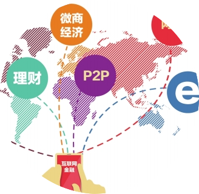
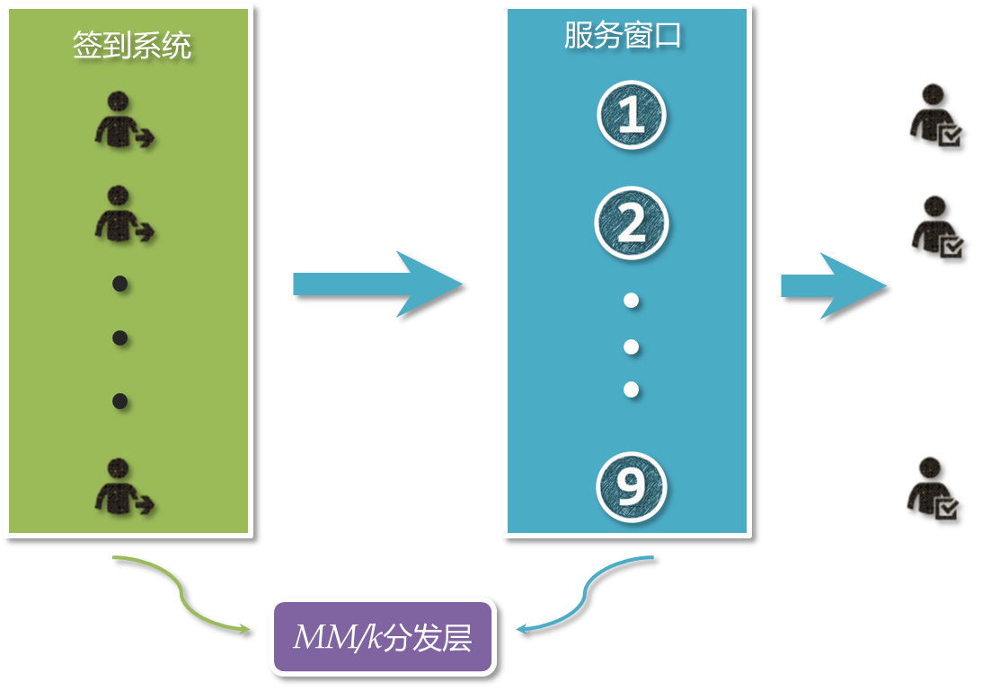

Toggle navigation
我们
解决方案
其他产品
诚邀加入
联系我们
动态
EN
我们
解决方案
其他产品
诚邀加入
联系我们
动态
EN
金融大数据解决方案
银行业现状
信息不对称？
大多数银行，总行和旗下营业点之间信息无法实时
交流，出现一定信息鸿沟

个性化服务？
大多数银行，总行和旗下营业点之间信息无法实时
交流，出现一定信息鸿沟
数据即资产？
对金融数据的实时挖掘与利用不够充分，没有充分发
挥数据即资产的能力
服务成本管理
基于大数据的模式发现
服务成本
窗口太多增加服务成本
排队太久降低服务质量
各网点之间严重不平衡
银行排队系统是一个典型的MM/k模型
顾客签到时间通常满足泊松分布
λ：顾客到达率
1/λ：顾客到达平均间隔时间
服务过程完成时间通常满足指数分布
µ：每个通道服务完成率
1/µ：每个通道服务完成时间
M：马尔科夫分布/Markov Distribution
k：代表并行服务通道数目

全国营业网点实时KPI
不同色块用于指示KPI高低
金融数据
模式定义
实时性系统中数据模式
高压缩比的数据序列化。 数据在分布式网点之间传输效率高
数据解析速度快，满足低延时，实时性需求
支持异构环境之间的数据传输，兼容不同平台与语言环境，灵活性高